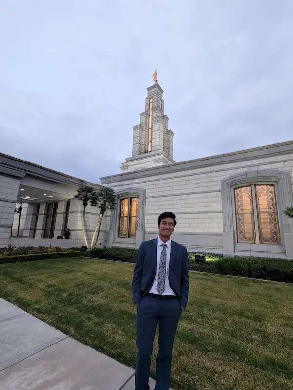

Luis
About Me
My name is Luis and I go by Luis. I was born in Mexico and currently live in Monterey. I am passionate about programming and love exploring the outdoors through fishing and hiking. In my free time, I enjoy listening to music and learning new technologies. I am dedicated to becoming a skilled web developer and creating meaningful digital experiences.
Monterey, Mexico
Monterey is a vibrant city in northern Mexico known for its modern architecture, cultural landmarks, and beautiful surrounding landscapes. The city is a hub of innovation and technology, making it an ideal place for aspiring developers. The nearby mountains and natural attractions provide perfect opportunities for hiking and outdoor activities.
